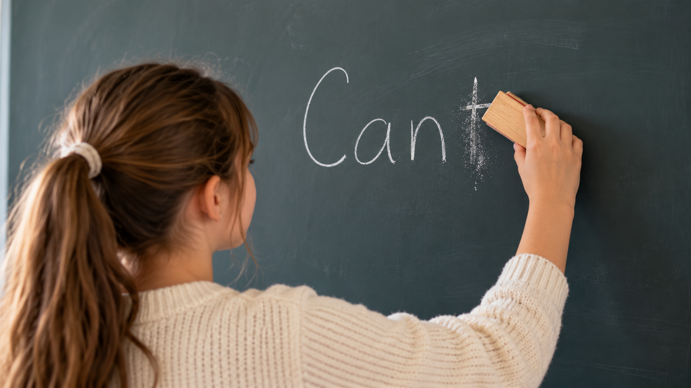

Zašto dijete čeka pomoć?
Iza rečenice „Ne znam” ne krije se uvijek nerazumijevanje. Ponekad učenik zna postupak, ali nije siguran odakle krenuti. Boji se pogreške pa radije čeka potvrdu.
Zato ga ne pitamo samo zna li riješiti zadatak. Zanima nas što je prepoznao, što bi pokušao i na kojem je koraku zastao.
Manje pokazivanja, više pokušavanja
Prvi primjer rješavamo uz objašnjenje.
Učenik sam bira sljedeći korak.
Pokušava, provjerava i pita kad zapne.
Na instrukcijama jedan primjer prođemo zajedno, a zatim učeniku postupno prepuštamo korake. Umjesto da odmah kažemo što slijedi, pitamo: „Što bi sada napravio?” I damo mu vremena da razmisli.
U UniMathu pritom pratimo školski udžbenik, bilježnicu i postupke učitelja. Kad učenik samostalno rješava zadatke, mogu mu pomoći primjeri koje smo već zajedno prošli.
Pogreška nije razlog za odustajanje
Krivi predznak ili preskočen korak ne znači da učenik ništa ne zna. Puno je korisnije da sam otkrije gdje je pogriješio nego da mu odmah pokažemo točno rješenje.
Posebno nas veseli kad umjesto „Je li ovo dobro?” čujemo: „Čekaj, da još jednom provjerim.”
Kako roditelj može pomoći?
Mala promjena u pitanju: umjesto „Znaš li riješiti?”, pokušajte s „Što bi prvo pokušao?”
Kad dijete zapne sa zadaćom, pokušajte s jednostavnim pitanjem: „Pokaži mi što si dosad napravio.” Podsjetite ga na primjer iz bilježnice, ali nemojte preuzeti rješavanje.
Ako ne uspije, neka označi zadatak i donese svoj pokušaj na instrukcije. U UniMathu mu bilješke i riješeni primjeri ostaju dostupni u OneNote bilježnici, a roditeljima nakon sata javljamo na čemu je radio i što preporučujemo dalje.
Naš je cilj da dijete sve češće pomisli: „Ovo mogu pokušati sam.”